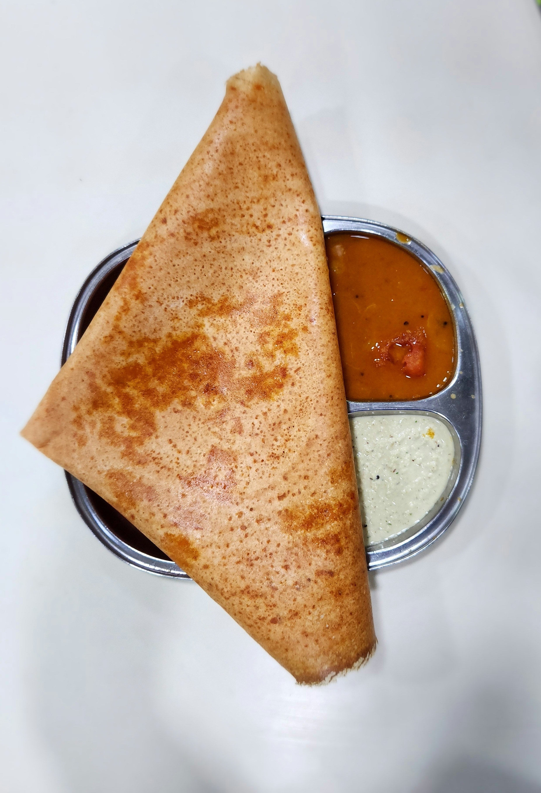

Dosa
HOME

Description
A dosa is a popular South Indian savory crepe made from a fermented batter of ground rice and black gram (urad dal). Known for its thin, crispy texture and characteristic tangy flavor from fermentation, it is a versatile staple often served for breakfast or as a snack
Ingredients
- Rice:1.5 cups of raw rice (like Sona Masuri) and 0.5 cups of parboiled/idli rice.
- Urad Dal:0.5 cups of whole skinned black gram.
- Lentils:1 tablespoon each of Toor dal and Chana dal.
- Methi:0.5 teaspoon to aid fermentation.
- Poha:0.25 cup for a lighter texture.
- Water:As needed for soaking and grinding (approximately 1.5 to 2 cups).
- Salt:1 teaspoon (non-iodized preferred).
- Cooking fat::Ghee, butter, or oil for the griddle.
Steps
- Soak the rice, lentils, and fenugreek seeds in water for 4–6 hours
- Grind the soaked ingredients into a smooth batter and add a pinch of salt.
- Ferment the batter in a warm place for 8–12 hours until it rises and becomes airy.
- Cook by spreading a ladle of batter thinly on a hot griddle with oil until golden and crisp.